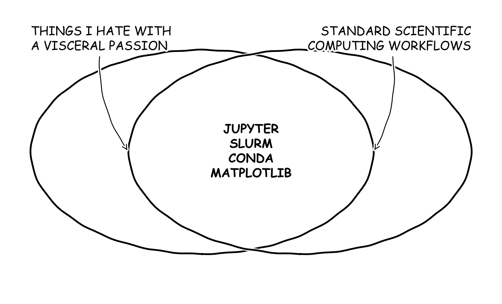

Python for Scientific Development
Contorting a Terrible Language into a Research Powerhouse
Research Team
The Hard Truth
The Iron Rule of Scientific Software Development
The Efficiency Trap
“If you take the time to build out code the right way, you will never use it.”
The Technical Debt
“If you write sloppy code, it will bite you in the ass.”
The Equilibrium
Damned if you do. Damned if you don’t. Unless you automate the structure itself.
The Python Paradox
- Python is a TERRIBLE language for scientific computing.
- Nothing about the language is inherently good for science.
- Most tools were developed by researchers as a “side-hustle.”
The Circle
The Good News
- Fact: Claude Code is a better developer than you will ever be.
- Fact: LLMs change the ROI on automation.
- Fact: I basically never write code anymore.
- Fact: Most LLM failures are failures of context, not reasoning.
The Vibe-Coder Thesis
“Being an effective vibe-coder is NOT about writing some super secret prompt; it is about ensuring the model has adequate context.”
Your Workflow
- You have data/simulation parameters.
- You have a model (statistical/ML/physics).
- You want to run sweeps with different inputs.
- You want to collect & visualize efficiently.
Goal
Automate the plumbing so you can focus on the science.
Tools of the Trade
1. VSCode / Cursor
Anti-Pattern
Stop using Jupyter Notebooks for everything. Notebooks are for exploration, not logic.
Modern IDE
Localize your logic. Use Cursor for AI-native pair programming to move 10x faster.
Doc: code.visualstudio.com | cursor.com
2. Project Structure
The Mess
Separate source code from sweeps. Don’t drown in a directory of .ipynb files.
Modularity
Make your code a module. Modular code is testable code.
Doc: git-scm.com
3. UV: The New Standard
Environment Hell
“It works on my machine, but the cluster environment is broken.”
The Solution
UV: Reproducible environments with uv.lock. Byte-for-byte consistency across all machines.
Doc: docs.astral.sh/uv
4. Pydantic: Strong Typing
Loose Data
Constantly parsing nested lists/dicts and hitting silent runtime bugs.
The Solution
Validation: Catch errors at the boundary. Give your LLM a precise schema to work with.
Doc: docs.pydantic.dev
5. Snakemake: Orchestration
Pipeline Amnesia
“How did I generate this figure? What results are stale?”
The Solution
DAG Generation: Snakemake knows exactly what needs to run. The script is the record.
Doc: snakemake.github.io
Results & Diagnostics
Interactive Dashboard
Our pipeline doesn’t just run code; it generates Insights.
Interactive Visualization
Access the Live Dashboard to explore the BERT training stats and class-wise ROC curves.
Summary
- Accept that you are a Developer.
- Provide Context to your LLM (Pydantic).
- Localize your Environments (UV).
- Automate your Pipeline (Snakemake).
- Let the machine do the heavy lifting.
Start Today
Clone the baseline repo and run just all.

Scientific Python | Modular. Reproducible. Professional.